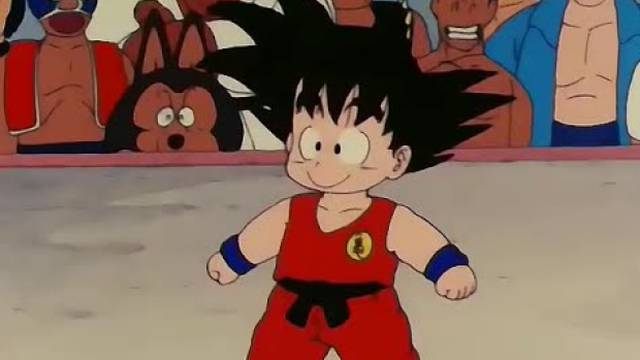
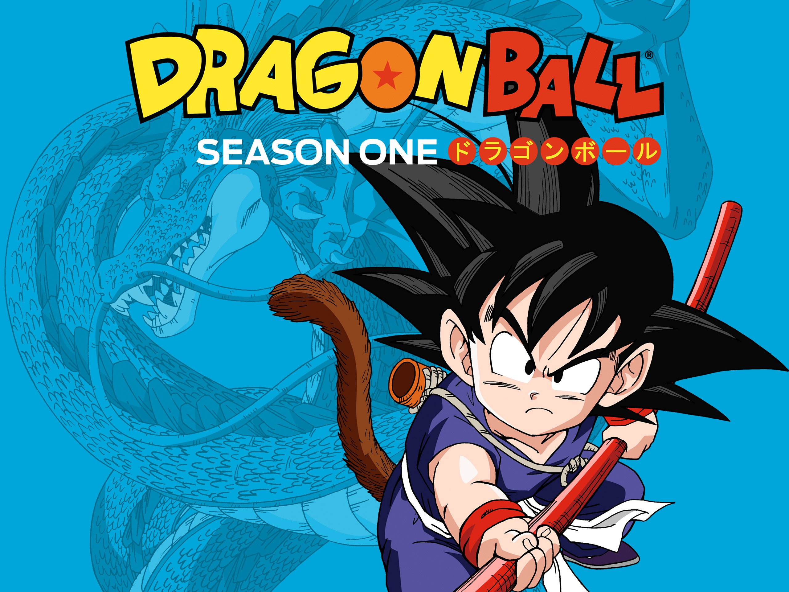

Saga: Dragon Ball
Recorrido por todas las sagas y temporadas del anime Dragon Ball.
Goku es un personaje muy querido por los fans de Dragon Ball. Especialmente por los niños que crecieron en los 90 al mismo tiempo que el joven protagonista. Las primeras temporadas de Dragon Ball tienen un cierto aire de nostalgia y pasaría mucho tiempo hasta que Goku y Krilin se convirtieran en dos guerreros por méritos propios. En ese momento, la serie explicó qué son las bolas de Dragón, un artefacto mágico en torno al cual giraba la trama principal. Esto sólo era el comienzo de una larga historia llena de aventuras de los Saiyan, dividida en decenas de temporadas y cientos de capítulos.

Hay una constante evolución en Dragon Ball desde el primer episodio. Entonces, todo el mundo buscaba las esferas para conseguir dominar el mundo y Goku se entrenaba con Muten Roshi para ser más fuerte. Era inevitable cogerle cariño a estos personajes que mostraban mucha naturalidad en cada capítulo. Lo mismo ocurrió con Bulma, la protagonista femenina más importante de la serie. Ninguna tuvo tanta presencia hasta la Saga de los Androides, donde Androide 18 tuvo un papel relevante. Chi-Chi también tiene carácter, pero Toriyama la ha relegado a un segundo plano desde que se casó con Goku.
En cualquier caso, la serie finalmente se centró en los Guerreros Z, liderados por Goku y Vegeta. Con el tiempo han evolucionado, han perfeccionado sus técnicas y alcanzado nuevas transformaciones más poderosas. Y esto no habría sido así sin los villanos de Dragon Ball, cada vez más desafiantes y fuertes como Freezer o Célula. Los seguidores de la obra de Toriyama tienen mucho cariño a Dragon Ball Z, siendo considerada la mejor etapa y donde se desarrollaron las tramas más importantes. También se presentaron los personajes más populares de Dragon Ball como Majin Buu, Raditz o Trunks del Futuro, que introdujo una realidad alternativa muy interesante.
El anime está compuesto por 20 temporadas en total desde Dragon Ball hasta Dragon Ball Super, aunque a continuación te explicamos el contenido de las mismas. También de Dragon Ball GT, un spin-off que no se considera canon porque no estaba en el manga y Toriyama se mantuvo al margen. En 1995, el mangaka decidió poner punto y final a su obra, pero el éxito de la serie hizo que Toei Animation produjera una serie por su cuenta que desvirtuó todo lo que se conocía hasta entonces. Sumando todo, Dragon Ball acumula más de 600 capítulos con Dragon Ball Super y las sagas se corresponden con las temporadas.
DRAGON BALL (Temporadas 1 - 6)
Dragon Ball está compuesta por 6 temporadas con un total de 153 capítulos. La emisión de la serie empezó en el año 1986 y su trama se centra en la infancia de Goku, su llegada a la Tierra y su entrenamiento con el Maestro Roshi. Por tanto, se puso más interés en los torneos de artes marciales, donde destacan distintos luchadores como Ten Shin Han. El anime se divide en las siguientes sagas que determinan el contenido de cada temporada.

- Saga de Pilaf
- 21° Tenkaichi Budōkai
- El ejército de Red Ribbon
- 22° Tenkaichi Budōkai
- Saga de Piccolo Daimao
- 23º Tenkaichi Budōkai
Ball Z (Temporada 7 - 11)
Con el 23º Torneo de las Artes Marciales se llega al final de Dragon Ball, pero Toriyama tenía mejores planes para los guerreros. La trama de Dragon Ball Z empieza 5 años después de la pelea con Piccolo y la serie dura 5 temporadas. Todos han evolucionado y Goku ha formado una familia, pero en la serie se enfrentará a muchos villanos completamente nuevos con mucha presencia.
Piccolo se ha vuelto un ser bondadoso y será el mentor de Son Gohan, el hijo de Goku. A diferencia de la primera serie, las bolas de Dragón pasan a un segundo plano aunque tendrán una importancia vital para los protagonistas. Estas son todas las sagas de Dragon Ball Z:
- Saga Saiyan
- Saga de Freezer
- Saga El Regreso de Garlick Jr.
- Saga de Célula
- Saga de Majin Buu
La temporada 7 tiene 36 capítulos. Goku ya es un hombre adulto, se ha casado con Chi-Chi y tiene un hijo llamado Son Gohan, algo que sorprende a todos sus amigos. Pero esta aparente vida normal se ve pronto alterada por un Saiyan que aterriza en la Tierra con malas intenciones. Se trata de Raditz y está buscando a Goku. Es la primera vez que se habla de los Saiyan, una raza de despiadados guerreros que conquistan planetas, quien anticipa la llegada de sus compañeros Vegeta y Nappa. Goku se dedicará a entrenar para enfrentarse a la nueva amenaza para el planeta Tierra, mientras Piccolo instruye a su hijo.
Dragon Ball GT (Temporada 12 - 15)
Como ya se ha dicho anteriormente, el tercer anime de Dragon Ball no se considera canon. Akira Toriyama quería concluir la serie con Dragon Ball Z, pero debido al éxito Toei Animation aprovechó el momento para lanzar Dragon Ball GT con 64 capítulos en total. La historia recicla la búsqueda de las bolas de Dragón, rescatando a Pilaf como uno de los villanos. La acción se sitúa 20 años después de la batalla de Majin Buu y 10 años del final de Dragon Ball Z con las siguientes sagas:
- Saga de las Bolas de Dragón Definitivas
- Saga del Vengador Demoníaco Baby
- Saga del Androide Definitivo
- Saga de los Siete Dragones Malignos
Dragon Ball Super (Temporada 16-20)
Los fans de Dragon Ball tuvieron que esperar 20 años para el regreso de Dragon Ball. Y lo hizo por todo lo alto. La serie de manga está escrita por Akira Toriyama e ilustrada por Toyotaro que será el que continuará el legado. El anime no se hizo esperar, ya que se estrenó el mismo año con una animación de dudosa calidad que no le hizo justicia. En cualquier caso, estos errores se solucionaron y la historia empezó a coger ritmo.
Tan sólo han pasado 8 meses de la derrota de Majin Buu y la Tierra vive un período de paz. Pero en Dragon Ball todo puede dar un giro de 180 grados y aparece en sus vidas el Dios de la Destrucción que protagonizará el primer arco de la serie. Actualmente suma 5 temporadas y 131 capítulos, pero no ha dicho su última palabra.
- Saga de la Batalla de los Dioses
- Saga de la Resurrección de Freezer
- Saga del Universo
- Saga de Trunks del Futuro
- Saga de la Supervivencia Universal (EP077 – EP131)